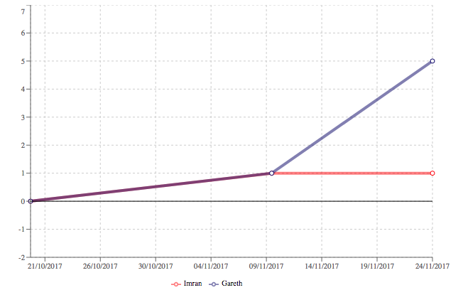

At a minimum you need to supply two bits of data to render the graph:
1. Series
The series is an array of objects - one per line on the graph. Here's an example with two series (Imran in red, Gareth in blue):
const series = [
{ "name": "Imran", "id": "imr", "color": "255,0,0" },
{ "name": "Gareth", "id": "gar", "color": "0,0,103" }
];
The id property is important because it's what you use to identify an event for that series.
2. Data (calculated from a list of events)
A list of events is the raw information which will be processed to produce the data points for the plot. There can be multiple events on a given date, even for a single series. There also may be no events for a specific event on a given date.
const events = [
{ "id": "imr", "when": "2017-11-10", "score": 4 },
{ "id": "gar", "when": "2017-11-24", "score": 4 },
{ "id": "nia", "when": "2017-10-20", "score": 2 },
{ "id": "imr", "when": "2017-11-10", "score": -3 },
{ "id": "gar", "when": "2017-11-10", "score": 1 }
];
This list of events must be aggregated and sorted into order to produce the data points for the plot. An "accumulate" function is provided to do this for you. For example, the list of events above would be accumulated to produce:
const data = accumulate( events );
console.log( data );
[
{
"when": 1508457600000,
"dateWhen": "2017-10-20T00:00:00.000Z",
"events": [
{ "id": "nia", "when": "2017-10-20", "score": 2 }
],
"points": { "nia": [ 2 ] },
"runningTotals": { "nia": 2 }
},
{
"when": 1510272000000,
"dateWhen": "2017-11-10T00:00:00.000Z",
"events": [
{ "id": "imr", "when": "2017-11-10", "score": 4 },
{ "id": "imr", "when": "2017-11-10", "score": -3 },
{ "id": "gar", "when": "2017-11-10", "score": 1 }
],
"points": { "imr": [ 4, -3 ], "gar": [ 1 ] },
"runningTotals": { "nia": 2, "imr": 1, "gar": 1 }
},
{
"when": 1511481600000,
"dateWhen": "2017-11-24T00:00:00.000Z",
"events": [
{ "id": "gar", "when": "2017-11-24", "score": 4 }
],
"points": { "gar": [ 4 ] },
"runningTotals": { "nia": 2, "imr": 1, "gar": 5 }
}
]
Our sample dataset produces a very simple graph like this:
<TimeSeriesGraph data={data} series={series} />
